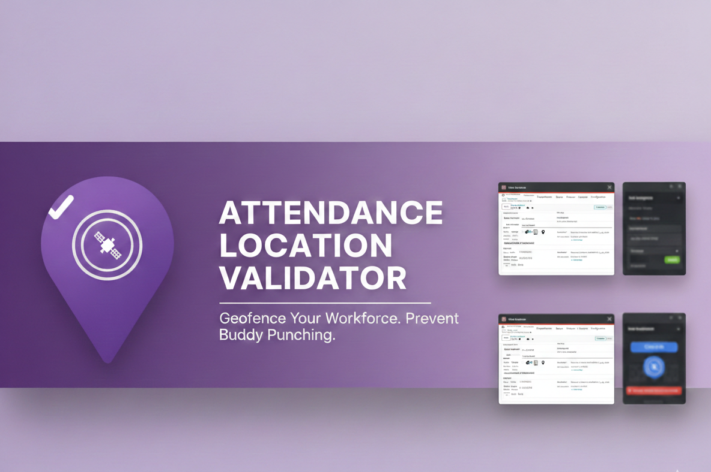
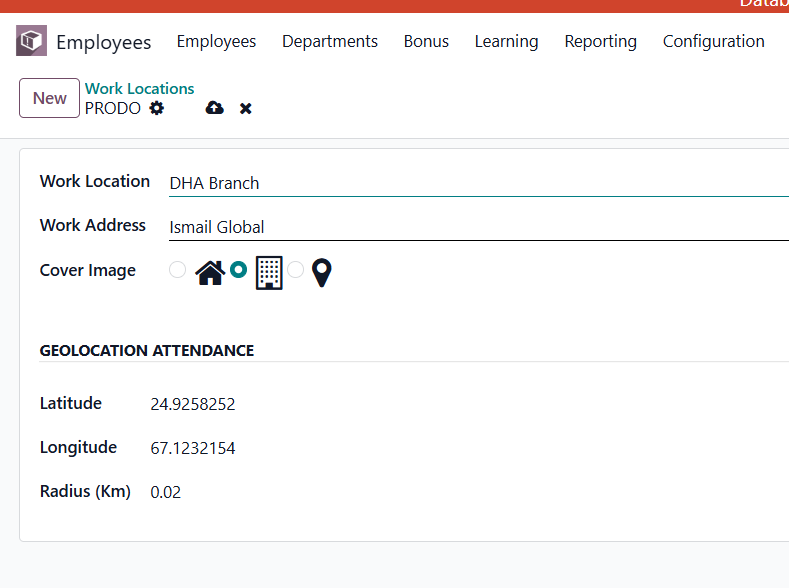
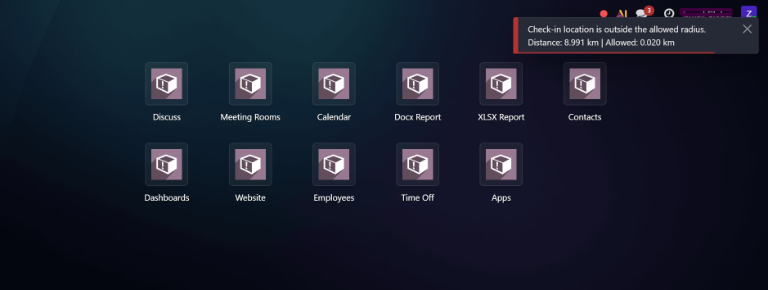
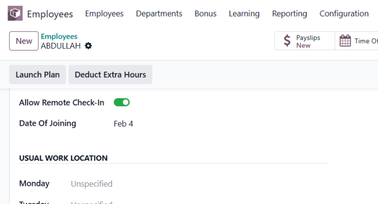

Stop "Buddy Punching" and off-site check-ins. Secure your Odoo Attendance with GPS Geofencing.

Using the industry-standard Haversine Formula, this module calculates the real-time distance between your staff and the office. If they aren't within the allowed radius, Odoo blocks the check-in immediately.

Go to Employees → Configuration → Work Locations. Fill in the Latitude, Longitude, and Radius (km).
The system automatically checks the distance whenever a user clicks Check-In or Check-Out.

On the Employee form, toggle Allow Remote Check-In for employees who should be exempt from location validation.

| Dependencies | hr, hr_attendance, base_geolocalize, web |
| Odoo Versions | 19.0 (Community & Enterprise) |
| Calculation Method | Haversine Spherical Geometry |